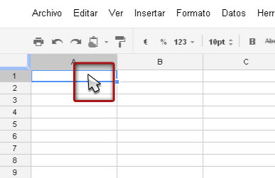
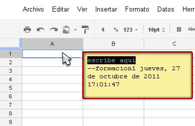
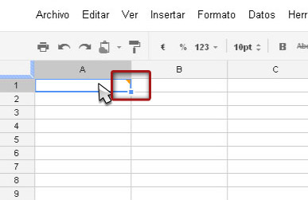
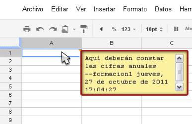
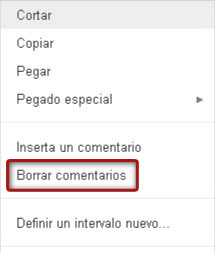

Es posible insertar comentarios o notas en las celdas para que otros usuarios las lean. Estos son los pasos que debemos seguir para insertarlos:
- Clic en la celda
- Insertar comentario
- Introducir texto
- Marca naranja
- Visualizar comentario
- Eliminar comentario
- Permisos
Para añadir un comentario en un documento de texto, en la pantalla de edición, haremos clic en la celda en la que queramos insertar un comentario.

Insertaremos un comentario haciendo clic con el botón derecho y eligiendo "Inserta un comentario", o también haciendo clic en el menú desplegable "Insertar" y eligiendo "Comentario".

Aparecerá un cuadro de comentario con nuestro nombre de usuario en donde introduciremos el texto deseado. Para guardar el comentario y cerrar el cuadro, haremos clic en otra celda de la hoja de cálculo.

En la esquina superior derecha de la celda aparecerá una marca naranja que indicará que hay un comentario insertado.

Para ver un comentario después de haberlo insertado, pasaremos el ratón por el indicador de comentario naranja. Haremos clic en el cuadro Comentario para visualizarlo en la pantalla.

Para eliminar un comentario nos pondremos sobre la celda que contenga el comentario y haremos clic con el botón derecho del ratón. Seleccionaremos Borrar comentario para eliminarlo. El indicador naranja desaparecerá de la celda.

Tanto los colaboradores como los lectores pueden ver los comentarios que se han añadido a la hoja de cálculo. Los colaboradores pueden editar, eliminar y visualizar los comentarios, mientras que los lectores sólo pueden verlos.